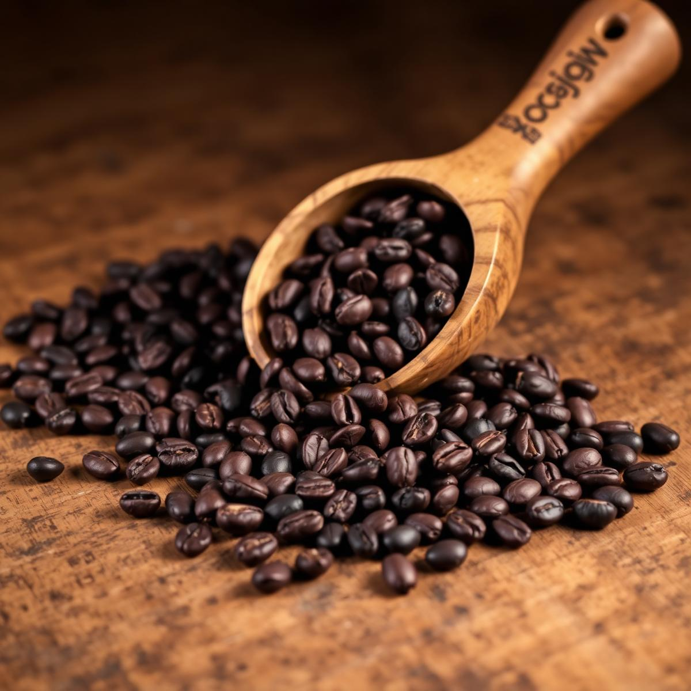
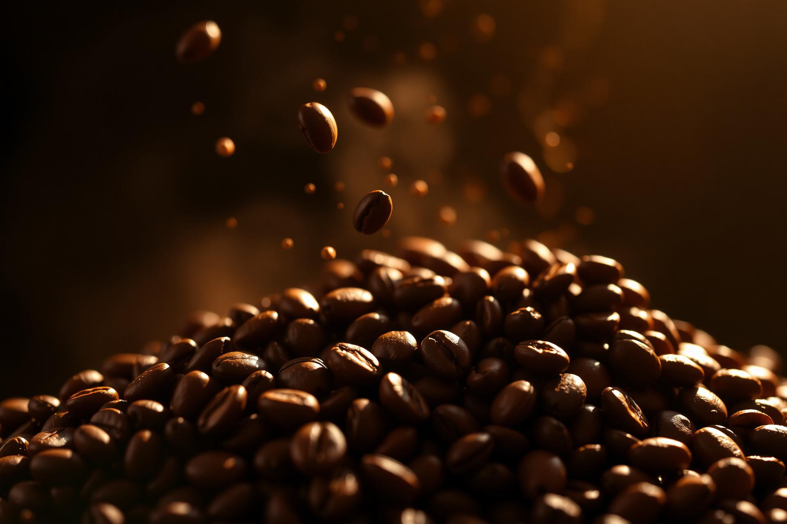
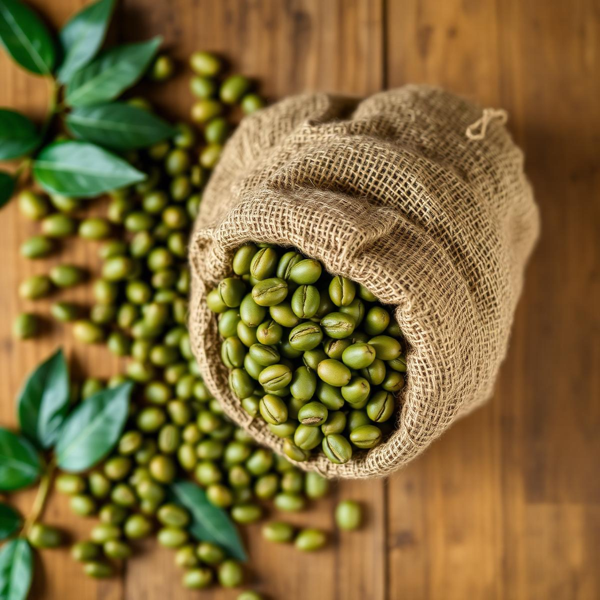

Bold · Earthy
Robusta Bengkulu
Body penuh, aroma cokelat dan kacang panggang. Ideal untuk espresso.

Kami memasok biji kopi Robusta dan Arabica pilihan, langsung dari kebun petani di dataran tinggi Bengkulu — disortir, dijemur, dan dikemas dengan standar premium.
Setiap cangkir kopi yang baik selalu punya cerita tentang tempat ia tumbuh dan orang-orang yang merawatnya. Bagi Kopi Alamah Temu, cerita itu dimulai dari hamparan perbukitan hijau di Kepahiang, Bengkulu.


Body penuh, aroma cokelat dan kacang panggang. Ideal untuk espresso.

Acidity cerah dengan notes citrus dan karamel manis.
Kami melayani pemesanan retail hingga skala kontainer untuk ekspor.
Hubungi Tim Penjualan →